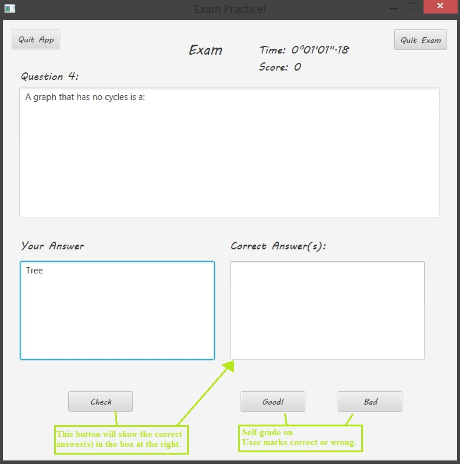
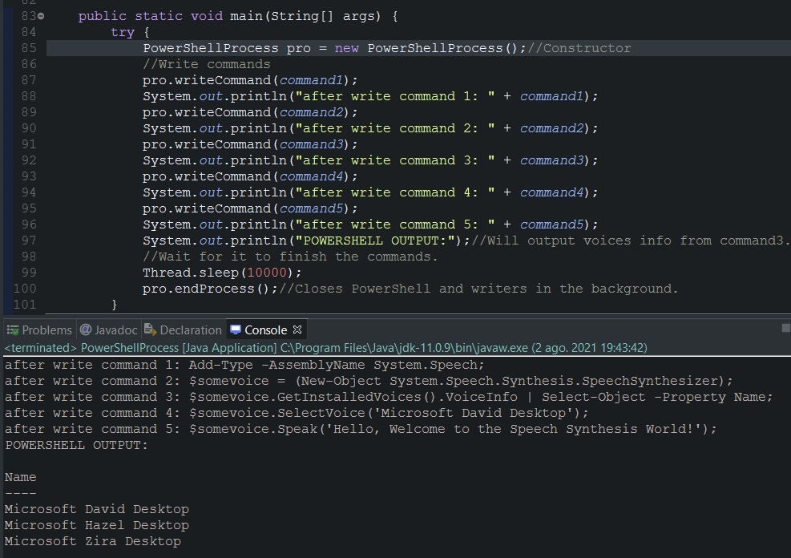
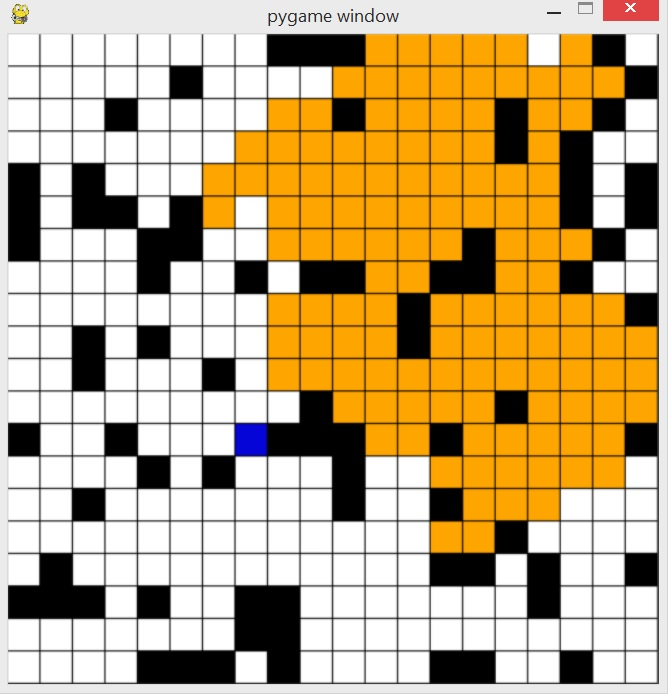
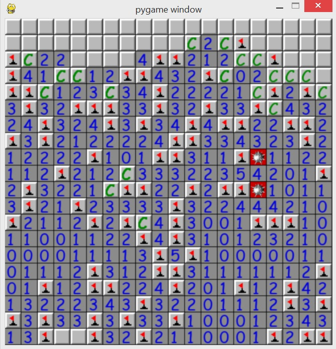
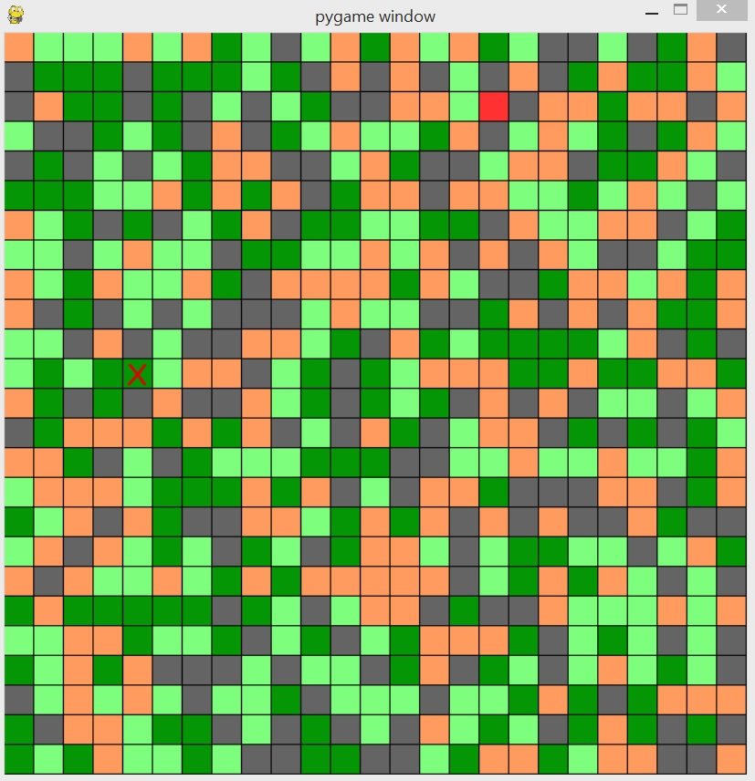

Concentrations

Artificial Intelligence
Enthusiast about AI concepts and algorithms. Relevant coursework taken covering uninformed/informed and global/local search, Knowledge Base, Better Decision making based on probability theory and predictive models with machine learning in pure AI course as well as in Data Science course.
Languages/Technologies: Python, LaTeX

Systems Analysis, Design and Programming
Long practice and strong understanding on the concepts of systems programming as well as Operating Systems Design. Relevant coursework taken on low level programming that implemented multithreading programs, socket programming and OS user-level libraries.
Languages/Environments/Tech: C language, Linux, Pthreads, FUSE File System Library

Software Methodology / Databases
Strong understanding on high-level programming concepts, software design patterns, database systems and group projects collaboration. Relevant coursework on abstractions, resource management, GUI, Android Programming, Database design, web programming and transactions.
Langauges/Tech: Java, FXML, Android Studio, JSP, mySQL, HTML, AWS EC2
Projects!
Exam Practice App (Personal Proj. / Java)
GUI Application that lets the user create personal exams and practice them (persistence allows to store exams in computer for future use). Measures time and score, and lets user choose how many questions to take, to shuffle, to autograde or selfgrade, and text-to-speech questions and correct answers.
Techonologies used: JavaFX for GUI, FXML for graphics interface design and organization, Java Process, Threads and Windows PowerShell for text-to-speech.
Note: This project uses the JavaFX library and my own PowerShellInteractor Library (which is the project right below).

PowerShellInteractor Library(Personal Project / Java)
Allows applications to create PowerShellProcess Objects that opens Windows PowerShell in the background and writes commands to it when requested. The library is a .JAR file.

Flaming Labyrinth (Artificial Intelligence)
Applied global search algorithms to find paths in a randomly generated maze with fire that expands over time. Used DFS, BFS, A* as basic strategies to beat the labyrinth and came up with an even better strategy to increase success rate by taking into consideration the expanding fire and flamability rate.
Note: Initial position of the agent (AI player) is top left corner, goal is always bottom right corner

Minesweeper Solver(Artificial Intelligence)
Applied knowledge base concepts, logical inferences concepts, and local search (beam search) to create an AI that solves the minesweeper game. Strategies with global information given were tested as well as better decisions using probabilistic methods. Note that the game is a Minesweeper simulation and the Agent does not immediately lose after stepping on a mine.

Find and Eliminate (Artificial Intelligence)
The experiment randomly creates a map with different types of terrain (each terrain has its false negative probability when searched on), put the target and the AI agent. Used Bayesian Networks to determine which coordinate in the map was the decision to search on, based on logical statements from conditional probability.

Color (Artificial Intelligence)
Used machine learning techniques to recolor complete images according to the data of one half (side) of the image. Techniques used: K-means clustering for a basic training and result (model), logistic regression with gradient descent and sigmoid function for a more complex model.
RailWay Booking System (Databases)
Worked in a team of 5 members for this project that consisted on designing a database, coding the front-end and back-end, and coding the SQL transactions for a railway booking system.
Designed and revised the final design of the system.
Coded simple user-interface for the customer reservations aspect of the project (new reservations, look up current and past reservations, cancel reservations).
Coded the database transactions for the customer reservations aspect of the project (SQL for the mentioned functionalities).
Plagiarism Detector (Systems Programming, C Language)
Worked with a partner to program a multi-threaded system that examined all sub-directories and files from a target directory, looking for the similarity of all the found files. Implemented: pthreads, linked lists.
Tiny File System (Operating Systems Design, C Language)
Worked with a partner to build a thread-safe, user-level file system (multi-level indexed) using the FUSE library to be able to do maintain a diskfile and handle a file system from certain chosen directory, showing the understanding on persistence in OS and the common issues that are faced. Used bitmaps to minimize metadata space and optimize operations.
Virtual Memory (Operating Systems Design, C Language)
Worked with a partner to build a user-level virtual memory to show understanding of what virtual memory is and how it works as part of the OS. Implemented multi-level page table and programmed TLB cache. Used bitmaps to minimize metadata space and optimize operations.
Thread Library and Scheduler (Operating Systems Design, C Language)
Worked with a partner to build a threads user-level library like pthreads to be able to do job scheduling like an OS does and enables concurrent programming.
C Sockets, Who's There? (Systems Programming, C Language)
Worked with a partner to build a threads user-level library like pthreads to be able to do job scheduling like an OS does and enables concurrent programming.
Photo Library (Software Methodology, Java, FXML)
Worked with a partner to implement Graphical User Interface and build a photo library that retrieves songs from a serialized photos file, and is able to handle users login, add,edit or delete albums and photos, as well as searching for photos with certain tags from the library and from the stored photos file. Practiced more teamwork, design patterns and program persistence.
Android Photo Library (Software Methodology, Android Studio)
Worked with a partner to implement the photos app as an android project. Practiced reading Android documentation, android GUI, android storage/persistence, android GUI and android development in a very fast-paced manner.
ASCII Chess (Software Methodology, Java)
Worked with a partner to build a Chess game made of ascii characters. The goal of this project is to practice inheritance and basic design patterns as well as to work with a partner to finish the project in a short amount of time.
MyMalloc (Systems Programming, C Language)
Worked with a partner to implement a custom version of the malloc function in C. Allocates and Manages data as malloc, uses minimal metadata (bitwise operations) to maximize available space and handles edge cases where malloc would segmentation fault.
Song Library (Software Methodology, Java, FXML)
Worked with a partner to implement Graphical User Interface and build a song library that retrieves songs from a stored songs file, and is able to add,edit or delete songs from the library and from the stored songs file.
Graph of Friends (Data Structures, Java)
Worked alone to implement graphs and graphs algorithms that takes a text file as input to build the graph. Graphs algorithms implemented are Depth First Search and Breath First Search (BFS).
Little Search Engine (Data Structures, Java)
Worked alone to implement hashtables and build a "little" search engine that gather and indexes keywords that appear in a set of plain-text documents, and searches for user-input keywords against the index and returns a list of matching documents in which these keywords occur.